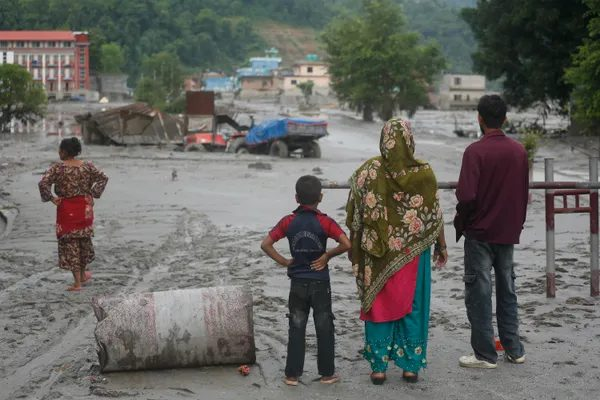

सगरमाथादेखि प्रशान्त महासागरसम्म: जलवायु न्यायका लागि नेपाल र टापु राष्ट्रहरू एकजुट!
संक्षिप्त सारांश: नेपालले संयुक्त राष्ट्रसंघमा अघि सारेको ‘सगरमाथादेखि समुद्रसम्म’ अभियानले हिमाली र प्रशान्त क्षेत्रका जलवायु सङ्कटमा परेका राष्ट्रहरूलाई साझा मञ्चमा ल्याउने प्रयास गरेको छ। जलवायु वित्त, पूर्वसूचना प्रणाली र अन्तर्राष्ट्रिय सहकार्यलाई केन्द्रमा राख्दै नेपालले जलवायु न्यायका लागि विश्वव्यापी पहल अघि बढाउन खोजेको छ।

काठमाडौं। जलवायु परिवर्तनका कारण हिमालयका हिमनदी पग्लिँदै छन्, नदीको बहाव परिवर्तन भइरहेको छ र समुद्री सतह बढ्दा प्रशान्त महासागरका टापु राष्ट्रहरू अस्तित्वकै चुनौती सामना गरिरहेका छन्। यही साझा सङ्कटलाई सम्बोधन गर्न नेपालले संयुक्त राष्ट्रसंघमा ‘सगरमाथादेखि समुद्रसम्म’ अभियान अघि सारेको छ।
सेप्टेम्बर २५ मा न्यूयोर्कस्थित संयुक्त राष्ट्रसंघको मुख्यालयमा आयोजित ‘Sagarmatha to the Sea: A Call to Action for a Climate-Resilient Future’ कार्यक्रममा नेपालका परराष्ट्रमन्त्री शिशिर खनालले हिमाल, नदी, समुद्र र तटीय क्षेत्रलाई एउटै जलवायु प्रणालीका रूपमा बुझेर अन्तर्राष्ट्रिय सहकार्य गर्नुपर्ने बताए।
कार्यक्रममा भुटान, माल्दिभ्स, न्युजिल्यान्ड, सामोआ र ताजिकिस्तानसहितका साझेदार राष्ट्र तथा संयुक्त राष्ट्रसंघका निकायहरूको सहभागिता थियो।
हिमालको सङ्कट, टापु राष्ट्रहरूको भविष्य
नेपालका हिमनदी पग्लिँदा नदी प्रणाली, कृषि, खानेपानी र जलविद्युत्मा असर परिरहेको छ। अर्कोतर्फ, प्रशान्त क्षेत्रका साना टापु राष्ट्रहरू समुद्री सतह वृद्धि, तटीय भूक्षय र बस्ती विस्थापनको जोखिममा छन्।
नेपालले प्रशान्त क्षेत्रका माइक्रोनेसियालगायतका टापु राष्ट्रहरूसँग अझ गहिरो साझेदारी निर्माण गर्न सके हिमालदेखि समुद्रसम्म फैलिएको जलवायु सङ्कटलाई विश्वमञ्चमा एउटै सशक्त आवाजका रूपमा उठाउन सक्ने सम्भावना छ।
जलवायु परिवर्तनमा न्यून योगदान गरेका नेपाल र प्रशान्त क्षेत्रका धेरै राष्ट्रहरूले यसको असमान रूपमा ठूलो मूल्य चुकाइरहेका छन्। त्यसैले यी देशहरूको सहकार्य जलवायु न्याय, जलवायु वित्त र अन्तर्राष्ट्रिय उत्तरदायित्वका लागि महत्त्वपूर्ण हुन सक्छ।
‘सगरमाथादेखि समुद्रसम्म’ अभियानले के खोज्दैछ?
नेपालले अघि सारेको पहलले पाँच मुख्य विषयलाई प्राथमिकता दिएको छ:
१. हिमाल, नदी, समुद्र र तटीय क्षेत्रलाई एउटै पारिस्थितिक प्रणालीका रूपमा हेर्ने।
२. संयुक्त राष्ट्रसंघको जलवायु प्रक्रियामा हिमाली क्षेत्रका मुद्दालाई थप प्राथमिकता दिने।
३. विश्वव्यापी तापक्रम वृद्धिलाई १.५ डिग्री सेल्सियसमा सीमित राख्न उत्सर्जन कटौती तीव्र बनाउने।
४. विपद् पूर्वसूचना प्रणाली, वैज्ञानिक सहकार्य र जलवायु उत्थानशील पूर्वाधार बलियो बनाउने।
५. विकासशील राष्ट्रका लागि पर्याप्त, पूर्वानुमानयोग्य र सहज पहुँचयोग्य जलवायु वित्त तथा क्षति र नोक्सानीसम्बन्धी सहयोग सुनिश्चित गर्ने।
अब COP31 तर्फ नेपालको नजर
आगामी नोभेम्बरमा टर्कीमा हुने COP31 जलवायु सम्मेलन नेपालका लागि आफ्नो जलवायु कूटनीतिलाई अझ व्यापक बनाउने अवसर हुनेछ।
नेपालले प्रशान्त टापु राष्ट्रहरू, हिमाली देशहरू र अन्य जलवायु जोखिममा रहेका राष्ट्रहरूसँग साझा एजेन्डा निर्माण गर्न सके जलवायु वित्त, उत्सर्जन कटौती र अनुकूलनका विषयमा अन्तर्राष्ट्रिय दबाब थप सशक्त बन्न सक्छ।
नेपालले सन् २०२५ मा पहिलो सगरमाथा संवाद आयोजना गरेको थियो। सरकारले सन् २०२७ मा यसको दोस्रो संस्करण आयोजना गर्ने योजना पनि अघि सारेको छ।
हिमालको हिउँ पग्लिँदा त्यसको असर समुद्रसम्म पुग्छ। त्यसैले जलवायु सङ्कटको समाधान पनि हिमालदेखि समुद्रसम्मका राष्ट्रहरूको साझा प्रयासबाटै सम्भव छ।
सगरमाथादेखि प्रशान्त महासागरसम्म, जलवायु न्यायका लागि साझा आवाज!
City Vision TV | समाचार
#SagarmathaToTheSea #ClimateJustice #NepalNews #PacificIslands #ClimateChange #COP31 #CityVisionTV